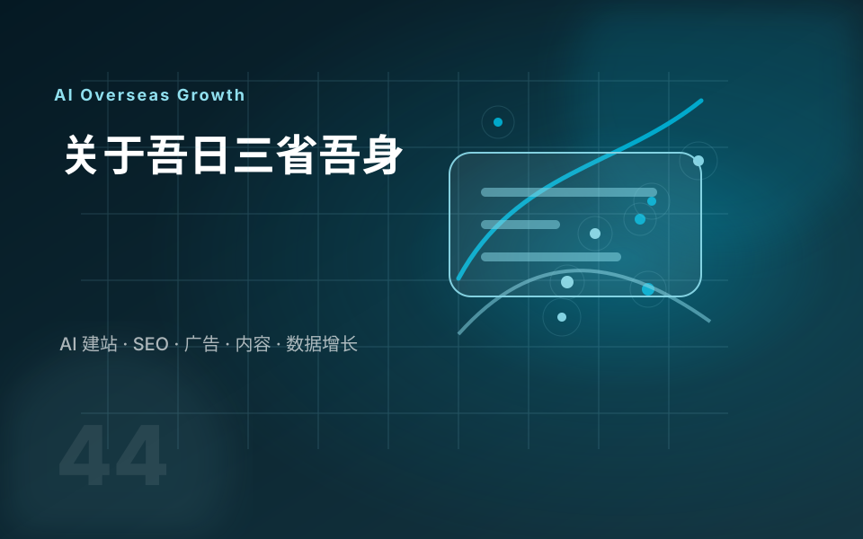

B2B 外贸场景
我会先看客户是谁、采购路径是什么、产品页面应该回答哪些问题，而不是直接套模板做页面。
从 I With Future 的内容可以看到，我长期围绕阿里国际站、B2B 独立站、WordPress 建站、Google 工具和社媒工具做学习记录。这个服务站会把这些经验整理成更适合客户决策的建站方案。
我会先看客户是谁、采购路径是什么、产品页面应该回答哪些问题，而不是直接套模板做页面。
关注域名、主机、主题、插件、后台维护、速度、安全和后续迁移，避免一次性交付后难维护。
网站上线后需要接入 GA4、Search Console 和 GTM，才能知道流量、收录、关键词和转化表现。

外贸建站不是只看页面好不好看，更重要的是目标市场、产品资料、SEO 基础、询盘路径和后续维护是否能连起来。合作前会先把这些问题拆开，让你清楚知道项目会怎么推进。
围绕机械设备、工业零部件、B2B 工厂、SOHO 和 Shopify 独立站，说明不同业务该怎么规划网站。
展示首页结构、产品页字段、FAQ 模块、SEO 标题、数据追踪和上线检查，让交付内容更容易提前对齐。
先通过行业、产品、目标市场、参考网站和资料完整度判断方案，再确认建站方式、页面优先级和交付范围。
如果你想先了解我的内容方向，可以从这些主题开始看。它们也解释了为什么我做建站时会特别关注关键词、Google 工具、内容结构和长期维护。
B2B 垂直小行业的个人学习博客，覆盖阿里国际站、独立站、Google 工具和社媒知识。
阿里国际站理解平台流量结构，再反推独立站关键词和产品页规划。
WordPress从主机、域名、WordPress 安装到 SSL 和基础配置，适合建站前了解流程。
Google 工具网站上线后检查收录、关键词、点击、索引问题和页面表现。
数据追踪用 GA4 看访客来源、页面行为、转化路径和内容价值。
GTM集中管理统计代码、广告像素和事件追踪，减少后期维护成本。
便宜建站最容易省掉的是正版授权、内容结构、数据追踪和后续维护，但这些恰好会影响网站上线后的使用体验。
WordPress 项目优先使用正版主题和插件，不使用破解版工具压低报价。
域名、主机、后台账号和源码归属尽量一开始说清楚，避免后续迁移受限。
交付时会考虑内容更新、速度优化、安全维护和后续功能扩展，而不是只做一次页面。
如果你已经有网站或准备做外贸独立站，可以先看方案、流程和联系页，再决定是否进一步沟通。
很多客户一开始说不清想要什么风格，所以我把 Demo 站作为选型入口。客户先看真实页面效果，再结合企业资料规划最终网站，会比凭空描述更高效。
如果你准备做外贸官网、WordPress 独立站或网站优化，把行业、目标市场、资料情况和参考站发给我，我会帮你判断更适合哪种方案。